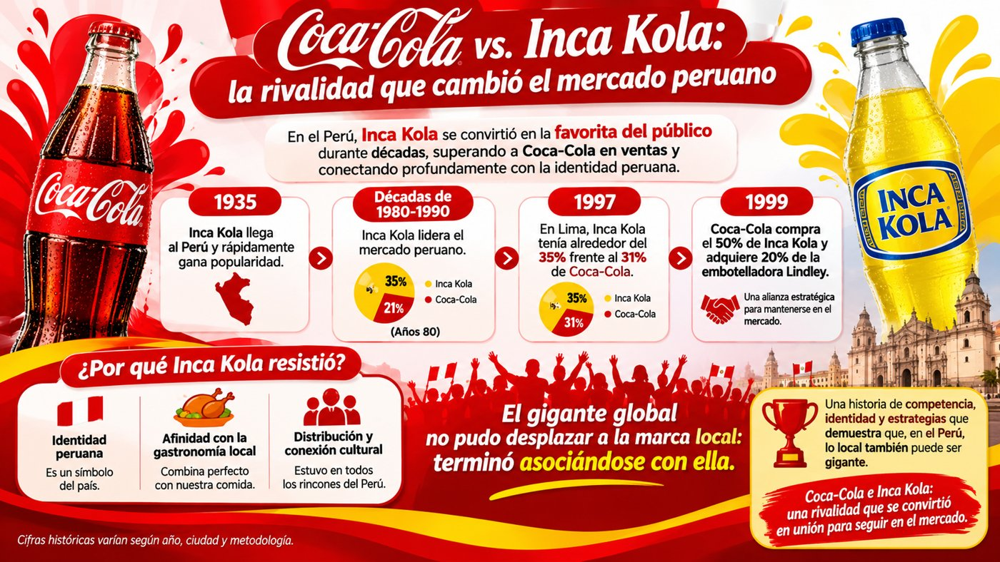

La rivalidad peruana que terminó transformándose en una alianza estratégica.
Ver su historia
Inca Kola nació en 1935 en Lima, creada por la familia Lindley. Su sabor dulce y su color dorado la hicieron muy querida, y con los años se convirtió en símbolo del sabor peruano.
Inca Kola mantuvo su propia identidad.
Cuatro razones que explican su éxito en el Perú
Su sabor dulce y su color dorado la hicieron parte del país.
Se asocia con la gastronomía peruana y las comidas en familia.
Una red local sólida la llevó a todo el mercado.
Para muchos peruanos es «la bebida del Perú», más que una gaseosa.